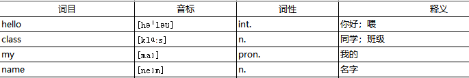
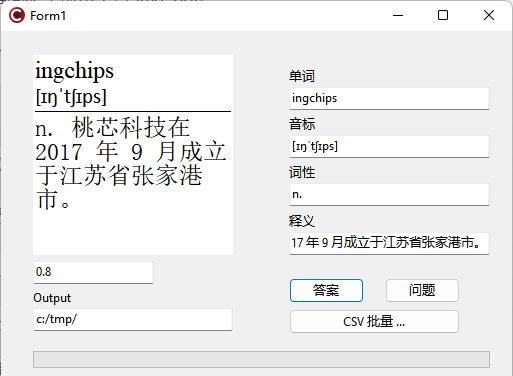
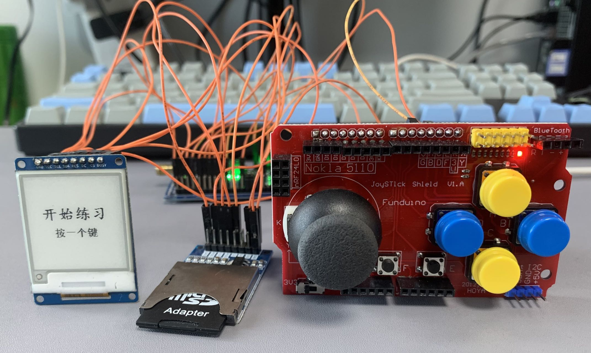

INGChips 为客户提供易用的 SDK，帮助客户便捷、高效地开发蓝牙产品。本文介绍利用 INGChips SDK 快速 DIY 一个墨水屏单词卡。
项目源代码
整体框架
墨水屏选择了一块 1.54 寸 $200 \times 200 $ 分辨率的模块。市面上的墨水屏单词卡产品都是长方形“带鱼”屏，虽然这种屏更合适， 但是模块比较少、价格较高，出于 DIY 目的，我们选择了价格低的方形墨水屏模块。这块屏一幅画面占用 $200 \times 200 = 40000 (b) = 5000 (B)$。 使用 ING918XX 内置的 Flash 显然存放不了几个单词，不妨用 SD 卡做存储。
功能尽量简洁：显示一个单词，问“会不会”？如果会，就显示下一个单词；如果不会，就显示单词音标、释义等信息。会或不会用开发板上的两个按钮就可以表示。
这个单词卡的大体框图如下：
部件、模块汇总：
| 名称 | 功能 |
|---|---|
| ING918xx 开发板 | 主控、按键 |
| 墨水屏模块 | 显示 |
| SD 卡模块 (3.3V) | SD 卡 |
| 普通 SD 卡 | 词库存储。格式化为 FAT 或 exFAT，不要太高端，容量 < 4GB |
| 若干杜邦线 |
主要功能详解
利用 Wizard 快速创建一个新的名为 eink_word_builder 的 Keil 项目，一路 Next 下去。
1. 墨水屏驱动
模块厂家已经整理好了驱动程序：EPD_xxx.c 为驱动程序主体（xxx 为模块的型号、尺寸），epd.c 为不同型号驱动程序的统一接口，API 简洁、清晰：
-
墨水屏初始化：
EPD_Model(MODEL_1in54); EPD_Init(0, &w, &h); -
显示一幅完整图象：
EPD_Display(image, NULL);这里
image是长度为 $5000$ 的uint8_t数组，每个比特对应屏幕的一个像素：$1$ 为“白”，$0$ 为“黑”。从屏幕的左上角按手写顺序到右下角将像素点编号为 $0..4999$，每 $8$ 个像素切分为一组，一组就与数组里的一个字节相对应：最高位上的比特对应最左边的像素。—— 整个对应关系非常自然、直观。
墨水屏和 SD 卡都使用 SPI 接口，两者可以复用同一个 SPI，通过 CS 片选信号区分模块。由于 ING918xx 具备两个 SPI 硬件，我们给墨水屏和 SD 卡分配两个独立的 SPI，避免频繁为两个模块修改 SPI 参数。两个 SPI 一个位于 APB 总线上，一个位于 AHB 总线上，我们将 AHB 总线上的 SPI0 分配给 SD 卡， APB 总线上的 SPI1 分配给墨水屏。
墨水屏的 SPI 适配沿用厂家 Dev_Config.c 模块，对 eink_conf 稍作扩展：
eink_conf_t econf =
{
.busy_pin = 12,
.res_pin = 17,
.dc_pin = 16,
.cs_pin = 13,
.scl_pin = 19,
.sda_pin = 18,
.full_mode = 0,
.spi = APB_SSP1,
.io_spi_clk = IO_SOURCE_SPI1_CLK,
.io_spi_mosi = IO_SOURCE_SPI1_DO,
.userdata = NULL,
};
Dev_Config.c 的几个函数的移植非常简单而直接，例如：
int DEV_Module_Init(void)
{
PINCTRL_SetPadMux(econf.scl_pin, econf.io_spi_clk);
PINCTRL_SetPadMux(econf.sda_pin, econf.io_spi_mosi);
// ...
SPI_Init(econf.spi);
return 0;
}
SPI_Init() 用来配置 SPI 参数：
static void SPI_Init(SSP_TypeDef *SSP_Ptr)
{
apSSP_sDeviceControlBlock param;
apSSP_Initialize(SSP_Ptr);
// ...
apSSP_DeviceParametersSet(SSP_Ptr, ¶m);
}
在 Wizard 的 Search Project 里输入 “spi” 可以找到用到了 SPI 的部分示例，SPI 硬件配置代码可以从示例里找到，稍作修改即可。
2. SD 卡与文件系统
这部分直接把 Data Logger 示例的相关代码（Fatfs 完整代码、SPI 适配模块 mmc_spi.c）复制过来，再修改管脚配置。
配置一个 1kHz 的硬件定时器，在中断处理程序里调用 disk_timerproc()。由于这个中断产生频率较高，
为了 保证 SysTick 的准确性，
记得在 app_main 里使能 PLATFORM_CFG_RTOS_ENH_TICK：
platform_config(PLATFORM_CFG_RTOS_ENH_TICK, 1);
2. 词库
拜疫情所赐，在国家的部署安排下，中小学教材出版单位公开了不少学习资料，比如 外研社初中英语新标准教材配套教学资源 提供了初中各册的电子版词汇表。词汇表里的每个词汇包含 4 项信息，词目、音标、词性、释义：

我们用 C++ Builder 社区版 开发了一个墨水屏图像生成小工具 img_gen （源代码在 img_gen 目录下）：

这个小工具代码很少，不再赘述。唯一值得一提的是将图像转换为黑白二值图像时，虽然在调用绘图 API 时“非黑即白”，但是由于抗锯齿技术（如 ClearType）的存在， 仍会得到一些灰色的像素。这个工具将像素的 RGB 色彩转换为 HSL，根据亮度判断“黑”还是“白”。
将词汇表里的后四列另存为 CSV 文件，点击 CSV 批量… 按钮即可将每个词汇转换为两幅图像，一幅表示问题，另一幅表示答案（即解释）。 所有的问题图像合并保存为 “Q.img”，所有的答案图像合并保存为 “A.img”。两个文件的保存路径由“Output”指定。
Canvas->Pixels[] 获取像素点的 RGB 值，效率很低。我们要转换的词汇量很小，影响不大，未做优化。
3. 主逻辑
整个程序的主逻辑放在一个 Task 里，伪代码如下：
def main_task():
初始化文件系统
词汇数目 = A.img 文件的大小 / 5000
初始化或者读入词汇的学习进度
显示开始学习的图像
等待用户按键
while True:
间歇地将学习进度保存到文件系统
如果所有的词汇都学会了，那么显示学习完成的鼓励图像，结束
随机选择一个还没学会的词汇
显示这个词汇的问题图像
等待用户按键
如果用户按的是“会”:
更新这个词汇的学习状态
如果用户按的是“不会”:
更新这个词汇的学习状态
显示这个词汇的答案图像
等待用户按键
我们使用一个 uint8_t prob 表示词汇的学习进度，0 表示学会了。当用户说会一个词汇时，就减小 prob，反之则增大。
随机选择词汇时，prob 越大，这个词汇被选中的概率越大。这个选择函数如下所示。
int select_word(uint8_t *prob, int wc)
{
uint32_t total = 0;
int i;
for (i = 0; i < wc; i++)
total += prob[i];
if (total < 1) return -1;
uint32_t r = rand() % total;
for (i = 0; i < wc; i++)
{
if (r < prob[i])
return i;
r -= prob[i];
}
fatal_err("select word", 0);
return -1;
}
测试
再准备两幅图像（start.img 和 done.img），分别在启动和完成学习时显示。 将这两幅图像连同 A.img、Q.img 一起复制到 SD 卡，将所有的硬件模块连接起来，就可以开始学习单词了。
如果感觉开发板上的按键比较小，不容易按，可以外接两个大一点的按钮：
